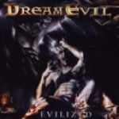

|
|
||
Dream Evil : Evilized (2003) |
|

http://www.dreamevil.mu |
1. Break the Chains 3:32 |
7.2/10 |
|
Evilized es el segundo disco de la banda sueca Dream Evil. En el camino marcado por su primer trabajo, continúan con un power metal melódico algo falto de originalidad pero bien ejecutado, con la voz de Niklas Isfeldt sacando fuerza y melodía, la guitarra de Gus G. aportando caña y algunos solos técnicamente notables y algunos coros aquí y allá. Las canciones que vuelan sobre el doble bombo, como "Break the Chains", potente apertura para el disco o "By my Side", a la que los cambios de ritmo salvan de ser un poco pesada, alternan con las canciones de ritmo rápido pero con menos presencia del doble bombo, como "Fight you 'Till the End", con un estribillo contundente, "Invisible", inquietante y rabiosa, "Children of the Night", uno de los temas más brillantes del disco, sobre todo en el estribillo, "Live a Lie", "Fear the Night", de ritmo marcado y estribillo interesante o "Made of Metal", típico himno al heavy metal con una letra tan tonta que me hace creer que hasta Manowar son unos auténticos poetas... ;-). El resto de las canciones son más suaves como "Evilized", más o menos una balada, "Bad Dreams", tema de tempo moderado, "Forevermore", balada que incluye un cuarteto de cuerda y "The End", otra balada que en mi opinión es la mejor del disco, sobre todo por el emocionante estribillo. Este es uno de esos discos consistente, sin canciones muy malas, sin canciones muy buenas, bien ejecutado y producido, pero al que le falta algo para ser un gran trabajo. Está bien para escucharlo unas cuantas veces, pero no es uno de esos álbums que sigues escuchando diez años después de que saliera... |
||
Rubén Béjar |
||